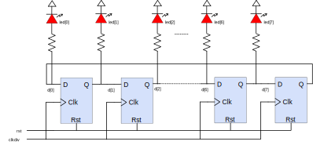
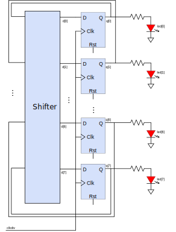

In this design, you are going to use a chain of flip-flops to implement a shifter register. The shifter register will be clocked using the clock divider you built in previous projects.
Understand the functionality of D Flip-Flops and how to implement a D Flip-Flop in Verilog HDL.
After you’re done, you should:
Be able to describe flip-flops using always blocks in Verilog.
Background
It is essntial that you understand the functionality of D Flip-Flops and how to implement a D Flip-Flop in Verilog HDL before starting with this project, refer to the background material to get a better understanding of these. Feel free to reuse your code from previous project (if necessary) to finish this project.
When the reset button is pressed, LED0 is ON while LED1 to LED7 are OFF. When the reset button is released, the light keeps shifting from LED0 all the way to LED7 and back to LED0 at a frequency of 0.74Hz.
Hints
There are different ways to design the system. Two block diagrams of the system that fulfills the requirements are shown in Figs. 1 and 2 below. You may come up with your own design that would meet the design requirement as stated above. There are also some sample codes listed within the “hints” section.
Simple Shift Register
Figure 1. Block diagram using shift register.
Flip-flop with Round Shifter
Figure 2. Block diagram using flip-flops with Shifter.
Flip-flop with Asynchronous Reset
always @ (posedge(clk), posedge(rst))
beginif (rst == 1)
Q <= 1'b0; // Q is reset to 0else
Q <= D;
end
Flip-flop with Combinational Logic
always @ (posedge(clk), posedge(rst))
beginif (rst == 1)
Q <= 1'b0; // Q is reset to 0else
Q <= (A & B);
end
2. Use Switches to Change Shifting Speed
Add two switches to control how fast the LED shifts:
If switch[1:0] is 0, LED shift frequency is 0.745 Hz;
If switch[1:0] is 1, LED shift frequency is 1.49 Hz;
If switch[1:0] is 2, LED shift frequency is 2.98 Hz; and
If switch[1:0] is 3, LED shift frequency is 5.96 Hz.
Challenge
1. Fancy LED Patterns
Instead of shifting the light on LEDs, create some fancy LED patterns using LEDs and/or a seven-segment display.
All done with this module!
Demonstrate your work and make sure the Project Submission Form has been signed off by the Lab Assistant/Teaching Assistant before you go to the next module.
Module 6: Combinational and Sequential Logic: Arithmetic Circuits